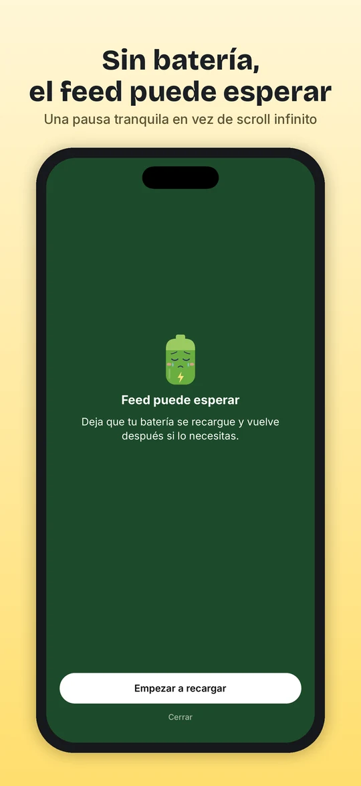

Bloqueador de apps y límite de tiempo de pantalla para iPhone
Tu scroll ahora tiene batería.
ScrollVolt te ayuda a reducir tu scroll a la mitad sin borrar ni una sola app. Las apps que elijas comparten una batería de scroll: al hacer scroll se gasta y, al soltar el móvil, se recarga.
Descárgalo en elApp StorePara iPhone · En español, inglés, alemán y turco

Cómo funciona
Elige las apps que te distraen
Redes sociales, vídeos cortos, juegos: tú decides. Comparten una batería de scroll que se gasta mientras las usas.

Desbloquea solo los minutos que necesitas
Arrastra la batería para desbloquear justo los minutos que quieras. Cada sesión empieza con una decisión.

A cero, el feed puede esperar
Una pantalla tranquila sustituye a la app hasta que la batería se recarga, algo que hace sola a lo largo del día.

El enfoque carga el doble de rápido
Inicia una sesión de enfoque para entrenar, estudiar o trabajar concentrado. Las apps que distraen quedan bloqueadas y la batería se carga el doble de rápido.
Todo lo que incluye ScrollVolt
Reto de la Mitad
Baja tu límite diario 5, 10 o 15 minutos al día hasta que hagas scroll la mitad que hoy.
Tu progreso, a la vista
Batería en directo, gráfica de la batería de hoy, tendencia semanal de scroll e historial de cada sesión de scroll y de enfoque.
Conoce a Volty
Tu pequeña batería amiga: llena de energía cuando descansas y agotada cuando haces demasiado scroll.
Tus apps se quedan
No se borra nada. Las apps solo se bloquean cuando la batería está vacía o hay una sesión de enfoque en marcha.
Privacidad de serie
ScrollVolt se basa en los frameworks de Tiempo de uso de Apple (Family Controls y DeviceActivity). Apple solo le da a la app tokens anónimos de las apps que eliges, así que ScrollVolt ni siquiera sabe cuáles son. Todo funciona en tu iPhone. Sin cuenta, sin rastreo, sin anuncios.
Precio
ScrollVolt Premium es una suscripción anual de renovación automática con 3 días de prueba gratis. ¿Prefieres pagar una sola vez? Elige el desbloqueo vitalicio. El App Store te muestra el precio de tu país.
Descárgalo en elApp StoreGuías
- Cómo limitar el tiempo de pantalla en el iPhoneLos límites de Apple paso a paso y lo que añade una batería de scroll.
- Cómo dejar el doomscrollingCinco pasos para volver a poner una pausa antes del siguiente vídeo.
- Cómo reducir el tiempo de pantalla a la mitadUn plan gradual: unos minutos menos cada día hasta llegar a la mitad.
- Adicción al móvil y a las redes sociales: qué hacerSeñales de alarma y pequeños cambios que ayudan más que la culpa.
- Temporizador de concentración que bloquea apps para estudiarBloquea las apps que distraen mientras estudias y carga la batería el doble de rápido.
- App de detox digital para iPhone, sin dejarlo de golpeUn detox diario que puedes mantener, sin guardar el móvil en un cajón.
Ayuda y contacto
¿Dudas, errores o ideas? Desde la página de soporte (en inglés) puedes enviarnos una solicitud, también en español.